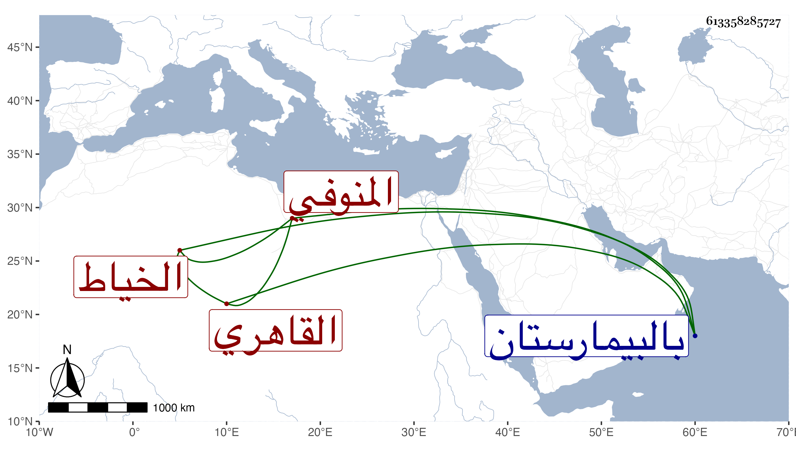

0902Sakhawi.DawLamic.ITO20230111-ara1.EIS1600.613358285727
Biography ID: 613358285727
131
علي بن نصر المنوفي ثم القاهري الخياط نزيل المنكوتمرية ويعرف بالمنوفي . ممن قرأ القرآن وبعض رسالة المالكية وصحب الشيخ مدين وتكسب بالخياطة ثم بحمل خبز صوفية سعيد السعداء وغيرها ، وسمع مني وبقراءتي قليلا واستقر في الفراشة بالمنكوتمرية وغيرها من وظائفها وفي الطلب بدرس الشافعي وقصر في ذلك كله بحيث تناقص حاله وضعف بصره بل كف وافتقر جدا وصار له ثلاثة أولاد من جارية له ، كل ذلك مع ملازمته للتلاوة ومحافظته على الجماعة سيما الصبح والعشاء ومجيئه لأجلهما جامع الغمري مع عماه حتى مات في أواخر ربيع الثاني سنة ست وتسعين بالبيمارستان وكان توجه إليه ماشيا فلم يلبث أن مات وأظنه جاز الخمسين أو نحوها رحمه الله وعوضه الجنة .
